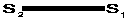
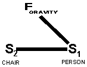
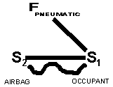
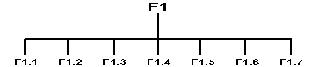

by
James Kowalick, Ph.D., P.E.
The Leonardo da Vinci Institute
Division of R. L. I., Incorporated
P.O. 659, Oregon House, California 95962
(916) 692-1944 ~ E-mail: headguru@oro.net
INTRODUCTION
If asked the question, "What was Henry Altshuller's greatest discovery?", TRIZ scnolars and consultants alike reply with either "TRIZ," "ARIZ," or "The laws of development of technical systems." The development of TRIZ (Theory of Inventive-Problem Solving) and ARIZ (Algorithm for Inventive-Problem Solving) are remarkable achievements - some say they represent the "creativity revolution of the century." Altshuller's recognition of evolutionary trends common to all technical systems is also no small achievement.
One characteristic of TRIZ is that the very best solution is often quite invisible to its potential creators. Altshuller's greatest discovery is also relatively invisible - even to the small community of TRIZniks who regularly practice the science and art of TRIZ-style problem solving. Some TRIZ "hall of famers" have nearly forgotten, or even abandoned, the Founder of TRIZ's summit achievement. Yet this brilliant discovery itself is enough rationale for Stockholm's distinguished Committee to award Altshuller a Nobel Prize.
Altshuller's greatest discovery is the basis for both TRIZ and ARIZ. He discovered the following simple, but universal, law:
This law has several
corollaries:
Altshuller stated that the three "elements" that make up a function can be thought of as being "two substances and a field." Substance is defined as something generally considered to be "a thing" or "an entity." For example, a substance can be a skyscraper or the planet earth. Additionally, a substance can be a truck, an automobile transmission, a molecule of carbon dioxide, a piece of string, a ray of light, or X-rays.
A "field" is defined as a source and type of energy - such as "nuclear," "thermal," "mechanical," or "acoustic." A field can be even more specifically identified. For example, a mechanical field can be further categorized into "rotational," "frictional," "hydraulic," or "pneumatic."
According to Altshuller, the right combination of two substances and a field "coming together" to form a triad - called a "Substance-Field," or "S-Field" - creates a function. This triad-like arrangement manifests itself as an action, operation or capability. An S-Field is a function.
Consider the relatively simple situation called "sitting." Sitting involves a person and a chair. For sitting to occur, the chair must interact with the person in an appropriate way. If both person and chair are lying sideways, sitting will not occur. Sitting will also not occur in outer space, far from the earth's influence. For sitting to occur, the person and chair must be vertically aligned, with their centers of gravity making a straight line passing close to the earth's center. When sitting does occur, the chair interacts with the person. Functionally speaking, the chair supports the person.
According to Altshuller, sitting cannot occur unless there are three elements involved, because it takes three elements to create a function. The chair and person alone are necessary but insufficient to create the function called "supports."
Altshuller uses the language of "S-Fields" to describe functions. For the function "supports," the person is designated as "S1" - the "substance being worked on." The chair is designated "S2" - the "substance that does the work" (or, the "substance that works on S1"). The specific functional statement is "Chair Supports Person." The general statement is "S2 interacts with S1." This functional interaction is shown as a line diagram

where S2 is the chair and S1 the person. Altshuller notes that this interaction cannot occur, unless there is a "field" that makes the interaction possible. For the function called "supports," the field is gravity, and the full S-Field model looks like this:

This S-Field model is read as follows: "With the help of a gravitational field, the person and chair interact to create the function called 'supports' ."
There are two types of functions: useful and harmful functions (i.e., undesirable functions). Harmful functions include "scratches," "warps," "damages," "injures," etc. Consider air bag protection systems for automobiles. The primary function of an air bag is to protect occupants of an automobile. Recently, however, the air bags themselves have been seriously injuring occupants - even in relatively low-speed collisions. Such a situation is illustrated below with an S-Field model:

In this S-Field model, the straight line between S2 and S1 indicates the useful function called "protects," and the wavy line indicates the harmful function called "injures." The field is "pneumatic" - resulting in a "protecting" force acting between the air bag and the occupant. Coexisting useful and harmful functions represent a "conflict" between the airbag and occupant. S-Field models are used to represent problems situations. The air bag objective is to eliminate air bag-caused injuries without reducing their level of protection, or complicating the design.
Altshuller and his associates analyzed the global patent collection and categorized several dozen "standard solutions." S-Field models of certain types of problems correspond to S-Field models of certain types of solutions. These standard solutions are available in the TRIZ database, for problem-solvers who understand the language of S-Fields to use to define specific design solutions.
The Leonardo da Vinci Institute, a division of RLI, has recognized that the TRIZ approach is far from being fully developed - in spite of the fact that there has already been over 50 years of TRIZ development in Russia. For the past five years, the Institute has been engaged in research and development of both TRIZ theory and practice. The capability of TRIZ for solving complex technical problems, and for forecasting next-generation products, is significantly enhanced. The following sections discuss recent TRIZ advancements made by RLI's Leonardo da Vinci Institute.
The three elements that make up a function can also be thought of as "three objects, or three substances" (recall that Altshuller described the triad as being composed of substances and fields). The three objects required for the "supports" function are the chair, a person, and the earth. One of the objects - the earth - is required to create the interaction between the chair and the person. Without the earth, this interaction would not be created - unless some other "third object" such as the planet mars, or the moon, enabled the "support" function to occur. "Adhesives" as a third object would certainly "join" the chair to the person, but this function would no longer create the situation called "sitting." Altshuller's law can be restated in terms of objects or matter:
All functions can be decomposed into three basic elements. The three elements are objects or matter - in the most general sense of the word.
Each element of a triad (function) has a specific "role" in creating that function. One element is the "passive" element, denoting the fact that it is "acted upon" or "worked on" or "operated on" by something else. This is the element that Altshuller refers to as S1 - the "artifact."
The passive element represents the present situation - the situation to be improved, or changed, or modified, etc. The process or "triad" of invention in general is actually a sequence. It begins with a problem or a challenge. Next, it uses a set of "creative or inventive resources," including creative or inventive approaches. The third step is the emergence of a solution, or a better design.
A second element of a triad (function) is the "active" element, denoting the fact that it "acts on," or "works on," or "operates on" something else - it acts on the passive element. This active element Altshuller refers to as S2 - the "tool" or "instrument" or "system." It brings about the desired change when it interacts with the passive element. But with only an active and a passive element, there is no interaction. Something - for example - is required to bring a chair (the active element, because it "supports" the person) together with the person (the passive element), in a way that completes the functional statement, "Chair supports person."
The third element of the triad representing a function is the "enabling" or "completion" or "neutralizing" element. - denoting the fact that it brings the active and passive elements together by creating an interaction between them. This is the element that Altshuller calls a "field." In fact, this third element is really a "substance" or "object," just like the other two elements (all "fields" have an object or substance behind them).
For the "sitting" example, the enabling element is the earth. The earth enables the "support" interaction between chair and person to occur. Instead of a substance or object (the earth), Altshuller identifies the third element: as the field FGRAVITY - the earth's "gravity." In fact, however, three objects need to be present to create the function: the chair, the person, and the earth.
The sequence of the process creating the function "supports" is: (1) Person, (2) Earth, and (3) Chair. The unseated person represents the problem situation. He is not sitting. A chair may be available, but "sitting" will not work without another "vehicle" that makes the person-chair interaction possible. This vehicle is the earth - the enabling object required for "supports" to take place. The chair, assisted by the earth's gravity, interacts with the person to complete the "supports" function.
This is a relatively simple example of how three elements come together to form a function (triad). All functions - technical or otherwise - require three elements in order to manifest as functions. The use of triads to solve problems and to meet difficult design challenges has been further developed by the Leonardo da Vinci Institute.
An element that serves as S1 in one triad may also serve as S2 in yet another triad. Another way of saying this: a certain element may be passive in one function (triad), and active in yet another function (triad). This is a very important idea in creativity and problem solving - and it can be taken a few steps further.
In the "sitting" example, the function is "supports." How would the function change if the roles of the person and the chair were reversed? What if the chair is the passive element and the person the active element? This generic situation serves to define several possible specific functions. One functional statement describes a person balancing a chair on his head: PERSON SUPPORTS CHAIR. Here, the chair is passive (i.e., S1) and the person is active (i.e., S2), while the earth continues to be the enabling element.
What about the case where the person jumps from the second story of a building, and falls onto a chair, totally destroying the chair? PERSON DESTROYS CHAIR. Here, the earth is still the enabling force; the person is the active force; and the chair is the passive force. This function is a harmful function (unless, of course, the person WANTED to demolish the chair in this manner!).
Another general observation can be made about functions:
There are six generic types of functions, corresponding to the sequential order of the elements making up the functions.
It was intimated above that the general function called "invention" has a sequence of: S1/Enabling Element/S2, where S1 (the passive element) is the problem situation or design challenge requiring change; the "enabling element" is the element that makes the change possible; and S2 (the active element) is the resulting solution, improved design or next-generation design.
According to this law of sequencing, there are only six generic functions in the universe. All functions can be "boiled down" to one of these six generic functions. Each of these generic functions is specified and differentiated by the order in which its elements "act." Each of these six generic functions represents thousands of specific functions. The corrolary to this law is that any specific function belongs to one of the six generic functions.
These six universal functions are currently under study at the Leonardo da Vinci Institute. Information on their nature, and on their practical use, will be published in future reports.
The decomposition of all functions into three elements was discussed above. Three elements must be simultaneously present to create a function. Each of these three elements has a specific role. The elements of a function "participate" or "act" in a particular sequential order to create the function.
Functions can be decomposed in yet another way. This is expressed as a law:
A function can be decomposed into a sequential process, each step of which is a function. This decomposition of functions has definite limits, beyond which no further decomposition can occur.
At the Leonardo da Vinci Institute, this law has been further developed. The implications of this "Law of decomposition of a function into a process of several sub-functions" is quite broad and powerful. The law is employed to describe how a product or technical system "works" - from a functional point of view. This is an essential part of the up-front, preliminary activities that must be accomplished in order to analyze and define a problem situation. Graphically, the law is depicted below:

In this drawing, "F" stands for "function." F1 is a specific function consisting of three elements. Function F1 is "decomposed" into several "steps" (in the case shown - seven steps). The steps are designated F1.1 through F1.7. Each step is a sub-function, which in itself consists of three elements.. The sub-functions participate in a sequential process. Upon completion of the process, the overall function F1 is fully manifested. Some or all of the sub-functions may themselves be decomposible into several sub-sub-functions.
For example, the function "Cleaning Teeth" consists of several steps, including the steps called "acquiring a brush and toothpaste," "applying the toothpaste to the brush," "applying the toothbrush to the surface of the teeth," etc., etc. Each of these steps is a sub-function that contributes to the main function "Cleaning Teeth." These steps have to occur in a certain sequential order.
To the untrained mind, this law of functional decomposition into a "process of several sub-functions" appears to be in conflict with the law of three elements that must come together "simultaneously" to create a function. The words "simultaneously" and "sequentially" imply a contradiction. In fact, however, there is no contradiction, as both are true.
At the time of this writing, it is believed that - just as all functions require the presence of three, and just three, elements - all decomposible functions can be divided into seven (generic) sub-functions. There are several applications for this "sequential" law in problem-solving or in meeting design challenges. These applications are under study at the Leonardo da Vinci Institute.
The concepts discussed above are not easy to grasp and understand. They require abstract and analogous thinking. When the TRIZ approach was first introduced to western nations, there was disbelief and difficulty on the part of some western scientists and engineers. It is common for those entrenched in an established approach, to temporarily experience difficulty in understanding a new or modified approach. Altshuller referred to this difficulty as "psychological inertia."
American psychologists discovered a psychological, reactionary process related to the appearance of anything threatening, sudden, or new (as a new scientific principle or discovery). This reactionary process includes behavioral stages described as "denial," "attack," "anger," "substitution," "compromise" - and ultimately - "acceptance." Even highly controlled individuals become negatively emotional when their existing paradigms are threatened by something new. Scientists profess to base their actions on logic, and to be undisturbed by the realm of emotions. Nevertheless, they, too, follow the reactionary path described by psychologists when faced with new discoveries that challenge the "old ways." Psychologists identify the root cause of this behavior as "vanity." It is an important element of Althshuller's theory of psychological inertia.
Psychological inertia is an important subject because it is one of the key inhibitors to learning anything new. Renaissance Leadership Institute has developed a new form of training called "experiential training," to overcome psychological inertia. After experiential training, professional staff members of RLI's client corporations are able to apply the world's leading edge creativity and design tools to rapidly field breakthrough products for the global marketplace. RLI's in-company TRIZ, Functional Analysis and Robust Design training & consulting are the world's finest - based upon comments received from customers.
The author dedicates this technical paper to Henry Altshuller and his associates in appreciation for their great service to humanity. Acknowledgements are due to associates at the Leonardo da Vinci Institute, to the TRIZ Journal on the world-wide web (http://www.triz-journal.com), and to Renaissance Leadership Institute's client corporations for their successful applications of the TRIZ approach to develop products of the future. These applications have provided fertile ground for the further development of TRIZ, which is developing in a dynamic way.
Birth of an Invention, (A Strategy and Tactic for Solving Inventive Problems), A. I. Gasanov, B. M. Gochman, A. P. Yefimova, S. M. Kokin, A. G. Sopelnyak, Moscow: Interpraks, 1995 - Private Translation for Dr. James Kowalick, (English translation by the TRIZ Institute and its Translation Consortium of Member Client Companies)
Collection of TRIZ Reports by Dr. James Kowalick, available through Breakthrough Press (Voice 916 974-7755; Fax 916 482-9898).
Creativity as an Exact Science, Henry Altshuller, Breakthrough Press (Voice 916 974-7755; Fax 916 482-9898).
Creating Breakthrough Products, Dr. James Kowalick, Notes from the Two-Day Executive Overview Session at Cal Tech's Industrial Relations Center, Pasadena, California.